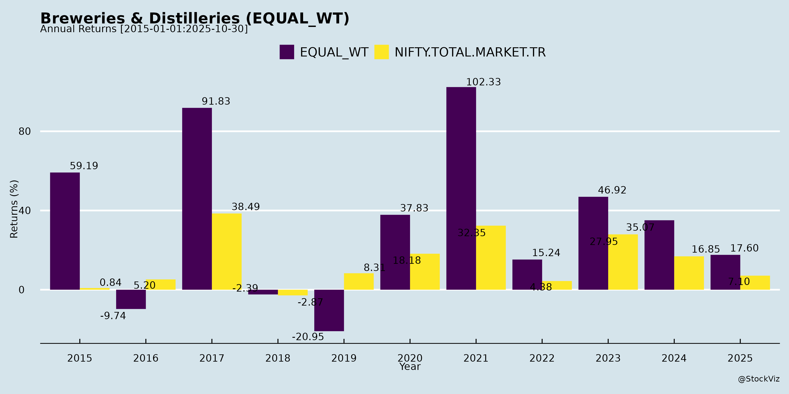
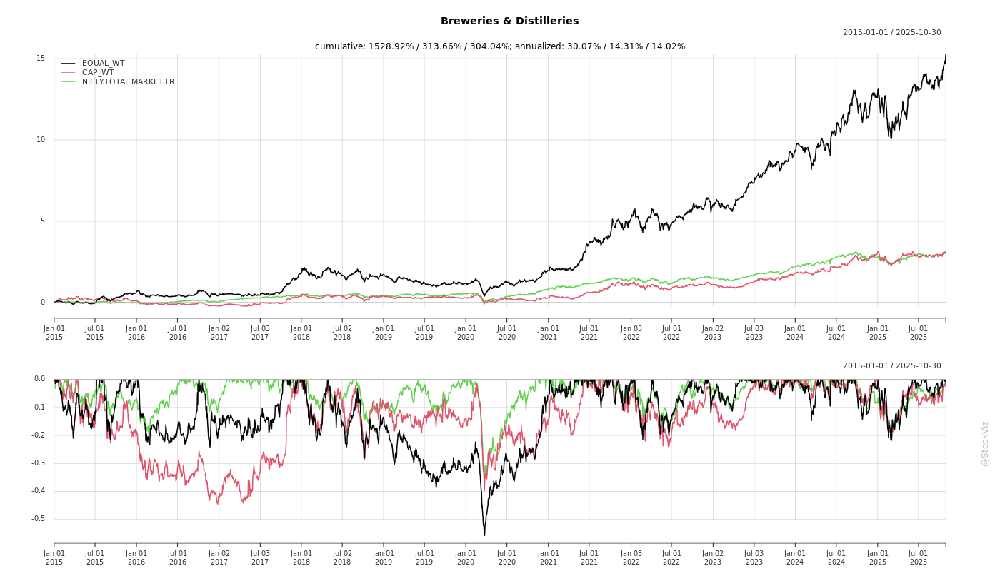
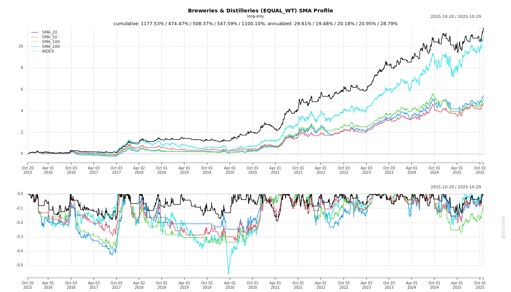
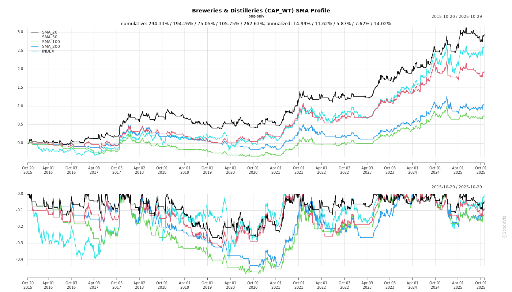
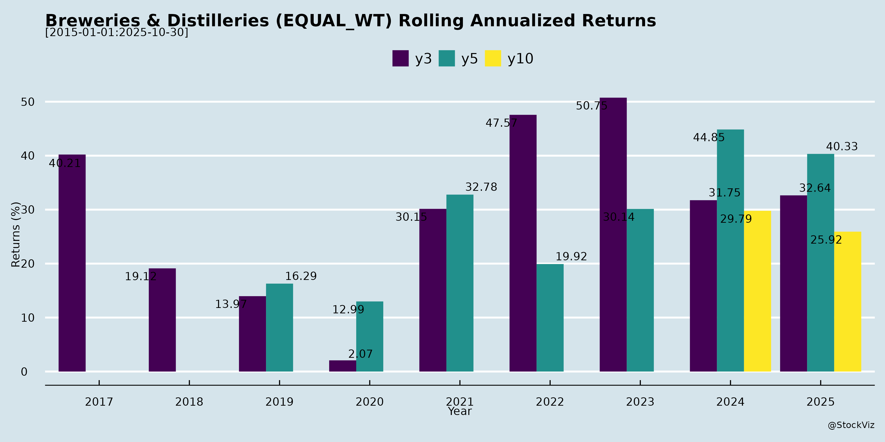
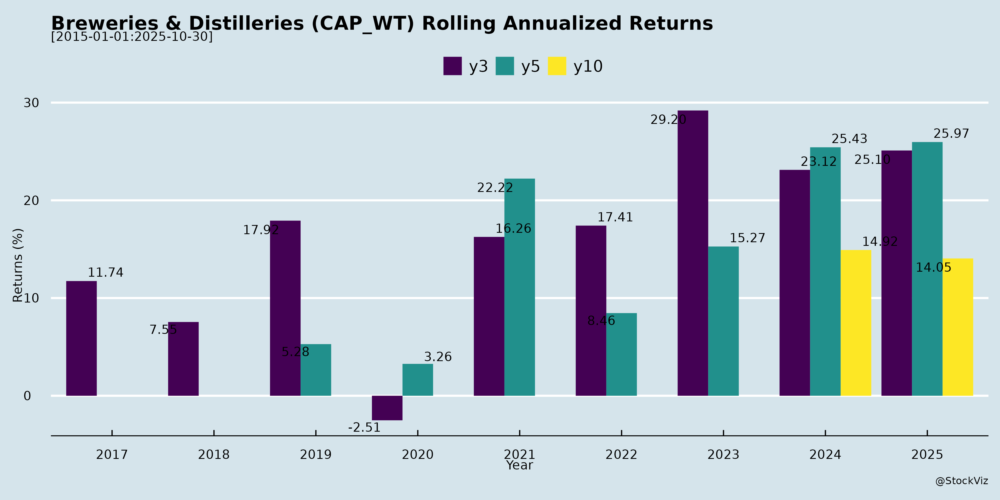

Breweries & Distilleries
Industry Metrics
February 20, 2026
Annual Returns


Cumulative Returns and Drawdowns

SMA Scenarios


Current Distance from SMA
Rolling Returns


Market Cap
EBIT (% of Industry Total)
Revenue (% of Industry Total)
AI Summaries
Analyst
asof: 2025-11-30
Analysis of Indian Breweries & Distilleries Sector (Based on Q2/H1 FY26 Filings)
The provided documents cover key players in IMFL (whisky, brandy, rum, vodka), beer, wine, ethanol production, and ancillary segments (e.g., ENA, maize oil extraction). Companies like Tilaknagar Industries, India Glycols, Som Distilleries, Sula Vineyards, Radico Khaitan, United Spirits, United Breweries, Allied Blenders, Globus Spirits, Piccadily Agro, Associated Alcohols, and BCL Industries report resilient Q2/H1 performance amid challenges. Revenue growth averages 10-17% YoY (excluding disruptions), with EBITDA margins at 14-19% and PAT growth 20-30% in many cases. Premiumization and diversification drive momentum, but policy volatility looms large. Below is a structured analysis.
Headwinds (Key Challenges)
- Regulatory & Policy Disruptions: Excise duty hikes (e.g., 15% overall, state-specific in Maharashtra/Andhra). License expiries (Telangana causing 15% sales drop for Sula), new policies like Maharashtra Made Liquor (MML) with FII restrictions limiting participation. Karnataka taxation led to 19-20% industry degrowth and market share loss.
- Input Cost Volatility & Oversupply: Maize prices INR20-25/kg (BCL/Tilaknagar); ENA prices falling (INR65-67/L due to ethanol diversion). Ethanol allocations low (50-60% of capacity; BCL at 107k KL/year vs. 260k KL potential), pushing diversion to lower-margin ENA/IMFL.
- Demand Slump in Key Markets: Volume declines (Som: 19% YoY in beer due to Karnataka; Tilaknagar notes Andhra stabilization post-policy but tapering growth). IMFL industry down 20% in Maharashtra.
- Operational Pressures: High inventory (Tilaknagar), working capital strain (rising short-term debt at BCL), and transient gross margin contraction (Sula: 900 bps YoY due to mix/sourcing shifts).
Tailwinds (Positive Drivers)
- Premiumization Success: Elite/premium mix stable at 78% (Sula); luxury launches (Tilaknagar’s Monarch Brandy in 6 states, Radico/Som expansions). Double-digit growth in key brands (Tilaknagar: 16% volume; India Glycols Potable Spirits: 24% revenue).
- Diversification & Expansions: Ethanol blending steady at 20% (potential 27%); ENA demand up (Tilaknagar/India Glycols). Wine tourism booming (Sula: 15% H1 growth, new resorts adding 50 keys). New capacities (Tilaknagar Prag: 36L cases; BCL 150 KLPD ethanol).
- State Recoveries & Mix Benefits: Andhra growth 20%+ (Tilaknagar market share to 12%); CSD doubling (Sula). Cans/state mix boosting realizations (Som: INR607/case, up 14%).
- Stable Margins/Cost Discipline: EBITDA 14-19% (Tilaknagar 15.1%, Som 15%); input stability (ENA/glass). Fundraises (Tilaknagar INR986cr preferential) support balanced debt:equity.
Growth Prospects
- Short-Term (H2 FY26): Festive recovery (Sula/Karnataka/Andhra); new launches (Tilaknagar luxury whisky/Samsara flavors; Som Mahavat/Sunny Beaches). Mid-teens volume (Tilaknagar), 10-15% revenue (Som INR800cr H2). Wine tourism +15-20% (Sula resorts/highway boost).
- Medium-Term (FY27+): Premium/IMFL ramp-up (Tilaknagar 16% margins; Som 15% IMFL share to 20%). Expansions (BCL maize oil; India Glycols branded nutraceuticals). Pan-India push (Sula Source to Haryana/Delhi; Radico/BofA calls). Ethanol if blending rises; ENA/IMIL diversification (BCL Punjab whiskey).
- Long-Term: 15-20% CAGR potential via premiumization (Elite 78%+ mix), tourism (Sula 154 keys), acquisitions (Tilaknagar Imperial Blue). Sector TAM expansion via urbanization, 20%+ blending, exports/duty-free.
| Company Example | Volume Growth (H1/Q2) | EBITDA Margin | Key Driver |
|---|---|---|---|
| Tilaknagar | 16% YoY | 15-19% | Premium brandy, Andhra |
| India Glycols | Potable 23% | 14.6% | IMFL/Kerala expansion |
| Som | Beer subdued | 15% | Cans/premium IMFL |
| Sula | Flat (ex-Telangana +) | 14.6% | Wine tourism/Source |
| BCL | Ethanol flat | 8-10% | ENA/maize oil |
Key Risks
- Policy/Regulatory: Excise hikes, blending delays (20% cap till Oct’26), state bans (e.g., MML FII curbs), FTA impacts (EU/Australia MIP cuts favoring imports; Sula preps contingency).
- Oversupply/Utilization: Ethanol capacity excess (BCL/Som low allocations); ENA price crash risk (falling to INR65/L).
- Raw Material/Commodity: Maize/rice volatility (INR18-25/kg); damaged FCI rice dependency.
- Debt & Capex: Rising (Tilaknagar INR1,086cr cash but debt for acquisition; BCL INR310cr). Debt:EBITDA ~2.5x (manageable but sensitive to margins).
- Competition/Execution: Local players in brandy/MML; integration risks (Tilaknagar Imperial Blue). State disruptions (Telangana auctions).
- Macro: Rural slowdown, monsoon impacts on tourism/grains.
Overall Sector Summary & Outlook
Bullish with Cautious Optimism: Sector resilient (10-17% revenue, 11-25% EBITDA growth) despite ethanol headwinds and state disruptions. Premiumization (luxury/IMFL) and tourism provide 15-20% growth runway; diversification to ENA/maize oil buffers policy risks. H2 FY26 recovery likely (festives, launches), targeting mid-teens growth. Risk-Adjusted Outlook: Moderate (7/10) – Policy tailwinds (blending/FTA) could unlock 20%+ CAGR; headwinds cap at 10% if ethanol stalls. Focus: Debt discipline, ENA ramp-up, premium execution. Investors favor premium leaders (Tilaknagar/Sula) over ethanol-heavy (BCL). Monitor Q3 allocations, excise revisions.
Financial
asof: 2025-12-02
Indian Breweries & Distilleries Sector Analysis (Based on Q3 FY25 Results)
The analysis draws from Q3 FY25 (Oct-Dec 2024) financial results of key players: United Spirits (USL), United Breweries (UBL), India Glycols (IGL), Globus Spirits (GMBL), Som Distilleries (SDBL), GM Breweries (GMBL), Sula Vineyards (SULA), Associated Alcohols (AABL), IFB Agro (IFBA), BCL Industries (BCL), and Ravi Kumar Distilleries (RKDL). Sector shows robust revenue growth (~10-25% YoY in most), driven by premiumization and ethanol, but margins pressured by costs/excise.
Tailwinds (Positive Drivers)
- Premiumization & Volume Growth: Premium brands (e.g., Kingfisher Ultra +33% vol. in UBL; Ultra Max in USL) drove 8-35% vol. growth (UBL, USL). Overall revenue up 10-23% YoY (SDBL 23%, AABL strong ethanol).
- Ethanol Demand: Govt. E20/ethanol blending push boosted AABL, BCL, IGL (biofuel rev. up). New capacities online (AABL Barwah plant).
- Operational Efficiency: Productivity programs (UBL ₹50 Cr savings); capex (USL ₹47 Cr Q3; greenfield breweries).
- Cash Generation: Strong CFO (USL ₹1,947 Cr; UBL ₹1,947 Cr 9M); dividends (USL ₹8/share proposed).
- Policy Tailwinds: Andhra Pradesh changes aided UBL vol.; rationalization in subsidiaries (USL).
Headwinds (Challenges)
- High Excise/Regulatory Costs: Excise duty ~50-60% of rev. (USL ₹15,207 Cr FY25; GMBL ₹1.37L Cr 9M). CCI probes (UBL ₹751 Cr penalty stayed).
- Input Inflation: Materials/power up (USL cost of materials +4%; SULA grape costs seasonal).
- Seasonality: Q3 dip (SULA rev. down; Globus flat despite vol.).
- Margin Pressure: EBITDA margins stable/mixed (12-15%; UBL down Q3 due to investments). Exceptional costs (severance: UBL ₹26 Cr; USL ₹65 Cr).
- Legal/Compliance: Ongoing disputes (USL historical inquiries; Globus IT search; Ravi Kumar recoverables ₹290 Cr).
Growth Prospects
- Premium & Portfolio Expansion: 20-35% premium vol. growth (UBL, USL); new launches (Amstel Grande UBL; malt spirits AABL).
- Capacity Ramp-Up: Ethanol/distillery expansions (AABL UP plant; BCL Kharagpur sub.); greenfield breweries (UBL UP).
- Diversification: Non-alco/beer (UBL NAB +ve); exports (SULA); biofuels (IGL bio-fuel ₹770 Cr 9M).
- M&A/Subs: USL rationalization overseas; AABL new sub.; BCL Goyal Distillery.
- Outlook: Sector vol. +8-10%; premium +25-30%; ethanol policy supportive. FY25 rev. growth 15-20% expected.
Key Risks
| Risk Category | Details | Impact |
|---|---|---|
| Regulatory | State excise hikes; CCI probes (UBL); bans (Bihar UBL); historical issues (USL Vijay Mallya). | Margin erosion; penalties (UBL ₹752 Cr stayed). |
| Operational | Input volatility (sugar/grains); power/fuel (AABL ₹286 Cr 9M). Seasonality. | EBITDA volatility (Q3 dips). |
| Legal/Financial | Disputes/recoverables (Ravi ₹2.9K Cr; Globus GST ₹344 Cr); IT searches (Globus ₹565 Cr demand appealed). | Cash flow; provisions (IFBA electoral bonds discontinued). |
| Competition | Illicit liquor; state monopolies; imports. | Vol. share loss. |
| Macro | Rural slowdown; monsoon dependency; forex (exports SULA). | Demand weakness. |
| Execution | Capex delays (UBL ₹47 Cr Q3); sub. impairments (SULA ₹60 Cr warned). | ROCE pressure. |
Summary: Sector resilient with premium/ethanol tailwinds offsetting regulatory headwinds. Growth 15-20% FY25 viable, but risks from policy/legal overhangs persist. Monitor ethanol policy, premium vol., and disputes. (Data as of Q3 FY25; USL/UBL dominate ~70% market).
General
asof: 2025-12-03
Summary Analysis: Indian Breweries & Distilleries Sector
Using the provided regulatory filings from key players (e.g., United Spirits, United Breweries, Radico Khaitan, Allied Blenders, Tilaknagar Industries, India Glycols, Piccadily Agro, Globus Spirits, Som Distilleries, G.M. Breweries, Sula Vineyards, Associated Alcohols), the sector shows resilience amid premiumization and consolidation, but faces regulatory headwinds. Below is a structured analysis of headwinds, tailwinds, growth prospects, and key risks.
Headwinds (Challenges Slowing Momentum)
- Regulatory and Tax Scrutiny: Persistent interventions, e.g., Customs inquiry at Som Distilleries (import/export reconciliation, no immediate impact but signals compliance burden); Sula Vineyards’ subsidiary faced CST tax demand (₹21 Cr+, later rectified/dropped). Ongoing litigations like Allied Blenders’ Supreme Court case (expedited trial ordered, but suit/counter-claim pending).
- ESG Pressures: Ratings like Radico Khaitan (64/100) and United Spirits (72.8, improved from 70.4) highlight need for sustainability enhancements, potentially raising costs amid unengaged third-party assessments.
- Operational/Compliance Costs: Routine disclosures (e.g., dividend TDS at United Breweries, committee changes at G.M. Breweries) indicate administrative burdens in a highly regulated state-excise environment.
Tailwinds (Supportive Factors)
- Premiumization and Brand Innovation: Globus Spirits’ launch of “DOAAB Expression 02” (Indian single malt in Japanese Mizunara casks) underscores shift to luxury craft spirits, building on awards and expanding to 8+ states/4,000 touchpoints.
- ESG Momentum: United Spirits’ score improvement signals sector-wide sustainability adoption, aiding investor appeal.
- Capital Market Access: Piccadily Agro’s BSE listing approval for 28.49L equity shares (from CCD conversion) eases funding; India Glycols secures NSE/BSE “No Objection” for spirits demerger.
Growth Prospects (Opportunities for Expansion)
- M&A and Consolidation: Tilaknagar’s ₹3,442 Cr acquisition of Pernod Ricard’s Imperial Blue (turnover ₹3,067 Cr, 9% whisky share, 22.4M cases) creates PAN-India presence in whisky/brandy; Associated Alcohols bidding for SDF Industries to boost IMFL capacity.
- Strategic Restructuring: India Glycols’ demerger into Ennature Biopharma and IGL Spirits (NCLT-bound, with detailed disclosures mandated) enables focused growth in bio-pharma/spirits.
- Premium Segment Boom: Whisky (largest IMFL category) and single malts growing double-digits; complementary networks (e.g., Tilaknagar-Imperial Blue) strengthen distribution in 27 states.
Key Risks (Potential Threats)
| Risk Category | Details | Examples from Filings |
|---|---|---|
| Regulatory/Legal | State/tax probes, litigations delaying operations; CCI/NCLT approvals critical. | Som Customs search; Allied SC case; India Glycols’ mandated disclosures on enforcements. |
| Execution/Financial | High acquisition costs (e.g., Tilaknagar’s ₹3,442 Cr + deferred €28M); post-closing adjustments/integration risks. | Tilaknagar BTA adjustments; Piccadily CCD conversion dilution. |
| Market/Competitive | Intense rivalry in premium IMFL; volume share erosion if premium shift fails. | Imperial Blue as #3 whisky brand amid consolidation. |
| Compliance/ESG | Non-compliance fines; outdated financials (>6 months) or undisclosed litigations could derail schemes. | SEBI-mandated disclosures for demergers; unverified exports in tax cases. |
Overall Outlook: Moderate Growth (7-10% sector CAGR projected) driven by premiumization (tailwinds) and M&A, but tempered by regulatory headwinds (e.g., 20-30% filings involve probes/litigations). Tailwinds outweigh headwinds short-term, with high growth in whisky/single malts. Monitor Q3FY26 earnings for acquisition impacts and litigation outcomes. Sector PE ~40-50x reflects optimism but embeds execution risks.
Investor
asof: 2025-11-30
Analysis of Indian Breweries & Distilleries Sector (Based on Q2/H1 FY26 Disclosures)
The sector encompasses IMFL (Indian Made Foreign Liquor), beer, ethanol, wine, and ancillary businesses (e.g., ENA, bottling, tourism). Key players (Tilaknagar, United Spirits, Radico, Allied Blenders, Piccadily, Som, Globus, Sula, India Glycols, BCL) report mixed performance: premium segments resilient amid regulatory headwinds, ethanol oversupply, and state-specific disruptions. Overall revenue growth muted (e.g., Tilaknagar +16% volumes, Som -7% revenue), but margins stable/improving (15-20% EBITDA). Premiumization drives optimism.
Headwinds (Key Challenges)
- Regulatory/Policy Volatility:
- State excise hikes/tax changes (Maharashtra MML aggressive pricing/taxes causing 20% IMFL degrowth; Karnataka taxes/slump persisting).
- Andhra policy liberalization aiding growth but competitive; Tamil Nadu license expiries disrupting Telangana (15% sales impact for Sula).
- Ethanol: Low OMC allocations (50-60% of capacity; BCL/Som/BCL note oversupply, flat demand).
- Volume Declines: Karnataka/Odisha slumps (Tilaknagar/Som down 19%); Telangana destocking (Sula mid-single digit ex-Telangana growth).
- Input Costs: Maize ~₹23/kg (BCL; down from ₹24-25 but forward contracts limit benefits); ENA/glass stable but pricing pressure (ENA ₹65-70/L).
- Competition/Discounting: Aggressive pricing in MML/IMFL; spirits giants (UB, etc.) facing industry degrowth.
Tailwinds (Positive Drivers)
- Premiumization Surge: Elite/premium >70-80% mix (Tilaknagar/Sula); launches (Indri single malts, Cashmir vodka, Mahavat whiskey) gaining traction (Piccadily +39% premium revenue).
- Wine Tourism Boom: Sula +8% Q2/+15% H1 (resort occupancy 77%; new Haven resort +50 keys).
- State Recoveries: Maharashtra rebound (Sula growth); Andhra share gains (Tilaknagar +2% to 12%).
- Diversification: ENA growth (Tilaknagar/BCL +79% YoY); CSD doublings (Sula/Tilaknagar); expansions (Piccadily/Chhattisgarh, BCL 150KLPD).
- Acquisitions/Partnerships: Tilaknagar-Imperial Blue (Q3 close); userships (Spaceman Spirits).
Growth Prospects
| Segment | Outlook | Key Drivers |
|---|---|---|
| IMFL/Beer | High (mid-teens volumes FY26; 20-30% premium CAGR) | Premium launches (single malts, vodka, rum); new states (UP, Kerala); CSD/export/duty-free expansion (Piccadily 29 states/28 countries). |
| Ethanol/ENA | Moderate (shift to ENA/IMFL) | Grain focus (40% FCI rice mandate); blending to 20-27%; BCL maize oil. |
| Wine | Strong (double-digit) | Sula’s Source (+double digits); tourism (Sula +15% H1). |
| Overall | 10-15% revenue FY26 (INR1,600cr+ for some); margins 15-19% EBITDA. | Capacity adds (Tilaknagar Prag 36L cases); UP plants (Som). |
3-Year Horizon: Premium IMFL/wine tourism to drive; ethanol stabilization via policy (flex-fuel); ₹2,500cr+ topline feasible (BCL).
Key Risks
- Policy (High): Excise flips (Maharashtra MML FII curbs); ethanol blending delays/oversupply (capacity sufficiency).
- Commodity Volatility (Medium): Maize/rice prices; glass/ENA swings.
- Execution (Medium): Capacity utilization (ethanol <60%); debt rise (Tilaknagar 1:1 equity-debt for acquisition; BCL INR310cr).
- Competition/Channels (Medium): Discounting; HoReCa/stadium access delays.
- Macro (Low-Medium): Urban slowdown; weather (harvests).
Summary: Sector resilient via premiumization (tailwind offsetting regulations), but ethanol headwinds cap near-term growth. Focus shifting to IMFL/ENA/bottling; expansions signal H2/FY27 acceleration (15%+ revenue). Bull Case: Policy easing + premium volumes → 20% EBITDA. Bear Case: Ethanol glut + taxes → flat FY26. Investors: Monitor state policies, ethanol tenders, premium traction.
Meeting
asof: 2025-12-03
Indian Breweries & Distilleries Sector Analysis
Based on the provided documents (Q2/H1 FY26 financial results, corporate actions, AGMs/EGMs, and disclosures from key players like United Spirits, United Breweries, Radico Khaitan, Allied Blenders, Tilaknagar Industries, India Glycols, Piccadily Agro, Globus Spirits, SOM Distilleries, G.M. Breweries, Sula Vineyards, and Associated Alcohols), here’s a summary analysis of headwinds, tailwinds, growth prospects, and key risks for the sector. Data reflects strong H1 performance amid premiumization trends, but regulatory hurdles persist.
Tailwinds (Positive Factors)
- Robust Financial Performance: H1 FY26 shows revenue growth (e.g., Radico: +20% YoY to ₹10,370 Cr, PAT +72% to ₹272 Cr; Piccadily: Revenue ₹46,190 Lacs, PAT ₹4,501 Lacs; India Glycols: Revenue ₹4,916 Cr, PAT ₹138 Cr). EBITDA margins expanded (Radico: 12.7% vs. 7.5% prior), driven by cost optimization and premium volume growth.
- Premiumization & Portfolio Expansion: Focus on high-margin premium/luxury (P&A) segments (e.g., Allied Blenders: P&A up to 40.4%; Radico: New launches like luxury Scotch/Gin; Sula: Strong wine sales). Backward integration (e.g., Radico’s PET/malt distilleries; Piccadily’s expansions).
- Capital Infusion & Efficiency: Fundraises (Globus: ₹500 Cr QIP; India Glycols: Preferential issue ₹467 Cr), stock splits (India Glycols), demergers (Radico for focus). Debt reduction (Radico: Net Debt/EBITDA 1.7x from 3.0x).
- Sustainability Push: Entry into renewables (Associated Alcohols: MOA/AOA amendments for solar/captive power).
Headwinds (Challenges)
- Seasonality & Volatility: Alcohol sales uneven (e.g., Sula Q2 revenue down QoQ; Piccadily notes seasonal sugar/distillery). Inventory fluctuations (Radico: +₹1,907 Lacs changes).
- High Costs & Taxes: Excise duties dominant (Radico: 71% of expenses); power/fuel up (India Glycols: ₹207 Cr). Employee/depreciation costs rising.
- Regulatory Stringency: State-specific policies, compliance burdens (e.g., auditor changes at United Breweries; director approvals via postal ballots).
- Margin Pressures: Raw material volatility (sugar/ENA), forex gains/losses (India Glycols unrealized FX ₹8 Cr).
Growth Prospects
- High Double-Digit Revenue/PAT Growth: Sector projected 10-15% CAGR (premium IMFL >20%; driven by urbanization, rising incomes). H1 trends: Radico/Piccadily >20% YoY.
- Capacity & Portfolio Expansion: Greenfield/brownfield (Radico: Malt distillery Q4FY26; Piccadily: Distillery expansions). Acquisitions (Radico: D’YAVOL stake; Allied: Brands like Woodburns).
- Premium/Luxury Shift: P&A salience rising (Allied: 40%; Sula: Wine focus). Exports/partnerships (e.g., Radico-Roust for Vodka).
- Diversification: Biofuels/pharma (India Glycols Ennature); renewables (Associated). Fundraises for capex (Globus ₹500 Cr).
- Long-Term: Demerger/schemes (Radico) for sharper focus; remuneration hikes signal confidence in leadership.
Key Risks
- Regulatory/Policy: State excise hikes, bans (e.g., dry days); illicit liquor (20-30% market). Compliance delays (postal ballots for MOA/AOA changes).
- Execution/Operational: Capex delays (India Glycols ₹172 Cr outflow); inventory/raw material risks (sugar volatility).
- Financial: High debt (Piccadily ₹32,435 Lacs borrowings); forex/interest costs (Radico ₹94 Cr finance costs).
- Competition/Market: Intense rivalry (United Spirits/Radico dominance); premium shift slow in rural/low-end segments.
- External: Weather (agri-inputs), inflation, monsoons impacting costs/volumes.
Overall Outlook: Positive with resilience. Sector tailwinds from premiumization outweigh headwinds; H1 growth (avg. 15-20% revenue) signals FY26 strength. Focus on efficiency/debt reduction key. Risks mitigated via diversification, but policy vigilance essential. Midcaps (Radico, Piccadily) outpacing largecaps on expansion.
Press Release
asof: 2025-12-03
Summary Analysis: Indian Breweries & Distilleries Sector (Based on Provided Documents)
The Indian alcohol sector (IMFL, beer, wine) shows resilience amid premiumization and innovation, with companies like United Spirits (USL), United Breweries (UBL), Radico Khaitan, Tilaknagar Industries (TI), and others reporting strong Q2/H1 FY26 performance. Key drivers include festive season tailwinds, premium segment growth, and strategic expansions/acquisitions. However, state-specific regulations pose challenges. Below is a structured analysis.
Tailwinds (Positive Factors)
- Premiumization Momentum: USL’s Prestige & Above (P&A) at 89.6% salience, growing 12.4% YoY; Radico’s Rampur single malt launch; ABD Maestro’s YELLO fusion whisky; Globus’ award-winning Doaab single malt. Elite/premium share stable at ~78% (Sula).
- Margin Expansion & Efficiency: USL EBITDA up 31.5% (margin +337 bps); Som Distilleries EBITDA +15.1% despite revenue dip; gross margins improved via pricing, mix, and stable COGS.
- Wine Tourism & Diversification: Sula’s record Q2 wine tourism revenue (+8% YoY, resort occupancy 77%); steady “Others” growth (+35% YoY).
- Strong H1 Volumes/Revenue: USL NSV +11.6%; Som volumes robust despite revenue softness.
- Festive/Holiday Outlook: USL CEO highlights H2 excitement; stable demand recovery expected.
Headwinds (Challenges)
- Regulatory Disruptions: Maharashtra policy changes offset growth (USL); Telangana license expiry caused destocking (Sula, revenue -1.1% YoY); Karnataka weakness (Som, total income -7.2% YoY).
- Market-Specific Softness: Temporary declines in standalone revenue (USL/Som impacted by prior-year comparatives/state issues); urban demand subdued (Sula).
- One-Off Costs: USL indirect tax hit (INR 40 Cr); Som working capital pressures.
Growth Prospects
- Capacity & Market Expansion: UBL greenfield brewery in UP (1-2 mhl, INR 750 Cr investment, operational Q2 FY27); USL re-entry in Andhra Pradesh; TI’s INR 3,442 Cr Imperial Blue acquisition (3rd largest whisky brand, 22.4 Mn cases).
- Innovation & Portfolio Strengthening: New launches (Radico’s Virasat malt, ABD’s YELLO, Associated’s CP Vodka variants, Sula’s premium wines); premium/super-premium focus (CSD doubling for Sula).
- H2 Catalysts: Festive/wedding season; urban recovery; wine tourism boost from Sula’s new resort; underlying demand stable (double-digit growth ex-disruptions).
- Long-Term: Premium salience rising; exports/awards enhancing brand equity; integrations (TI’s supply agreements) to unlock synergies.
Key Risks
- Regulatory/Policy Volatility: State-level excise hikes, license delays (e.g., Maharashtra, Telangana); high dependence on key states (UP, Maharashtra).
- Execution Risks: Acquisition integrations (TI’s Imperial Blue, Som’s WGNPL subsidiary); capex delays (UBL brewery).
- Cost/Inflation Pressures: Potential COGS rise despite current stability; forex/debt costs (TI funded via debt/equity).
- Competition & Demand: Intense rivalry in premium/white spirits; urban slowdown persistence; volume declines in popular segments if pricing fails.
- Macro Factors: Input volatility, economic slowdown impacting discretionary spends.
Overall Outlook: Sector poised for H2 recovery (10-15% growth potential), driven by premiumization (20%+ CAGR) and expansions. USL/TI lead scale plays; niche players (Sula/Radico) via tourism/innovation. Monitor regulations closely—resilient firms with strong balance sheets (e.g., USL EBITDA margins 21%) best positioned.
Copyright © 2023 SAS Data Analytics Pvt. Ltd. All rights reserved.